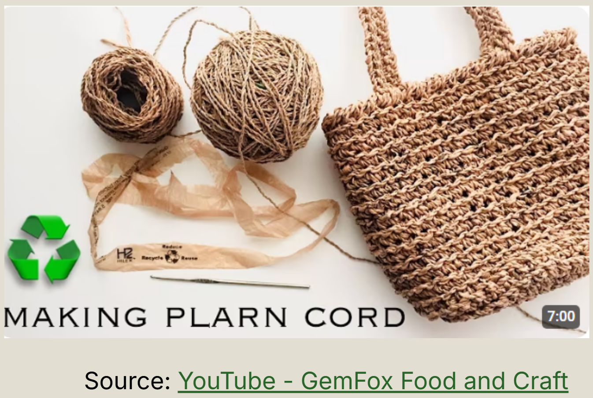

Plastic grocery bags are not recyclable: Although they are made of plastic, they have a high tendency of getting stuck and clogged in sorting mechanisms. To combat excess bags stockpiling in homes, crafters found a unique way to convert their plastic bags into a yarn material. This yarn could be crocheted into a much stronger, reusable bag, but the plarn making process is lengthy and strenuous, taking 50+ hours to make one ball of yarn.


Our team of 6 had 16 weeks to design, assemble, and deliver our solution to improving the plarn making process. As the Mechanical Design Lead, I oversaw design options and the implementation of mechanical features to ensure all sub assemblies worked together.
Our design needed to be cheap, manufacutrable, require short lead times, and had to be ergonomic and require few interactions from the consumer. I designed mechanisms, oversaw part selections, and performed FEA and calculations to ensure materials could withstand high cycle counts.
Plastic bags on their own are not well suited for creating a long chain of material. To chain each bag together, they are sliced horizontally to form loops that can be tied. After cutting the handles and the bottom off, leaving the walls of the bag that form a tube, one groery bag can be turned into 8-16 loops. This process is actually very quick: by folding the bag in half 3 to 4 times, all the loops can be made with one cut, taking less than 30 seconds per bag.

Once the loops are created, they need to be chained and twisted together. The twisting motion requires both ends of the loop get twisted in one direction while being twisted together in the opposite direction. This strengthens the material, and restricts an unwinding and unraveling of the yarn. This rotational pattern need can be derived from a planetary gear's motion, which was used to mount each loop while it is twisted.
In addition to the twisting mechanism, I implemented a tension monitoring mechanism and spooling mechanism. When the plarn was fully in tension, it would trigger a limit switch, and the spool would loosen slightly to relieve tension.
I selected the motors and motor drivers based on calculated and assessed precision, power, speed, and torque requirements.

Throughout the designing process, I made sure all parts were designed with intent for plastic injection molding by maintaining drafts and minimzing solid pockets. This was intended to mimic real world product design constraints.
All electronics and gears are completely encased within the mechanism to prevent anything getting caught. To use the machine, only one button is needed which lights up when it needs to be pressed.


Overall, the project was a success and we were able to deliver a working prototype a week ahead of out deadline. Our plarn machine is desktop sized, costs less than $20 to manufacture, and reduces the plarn making process by 5x.